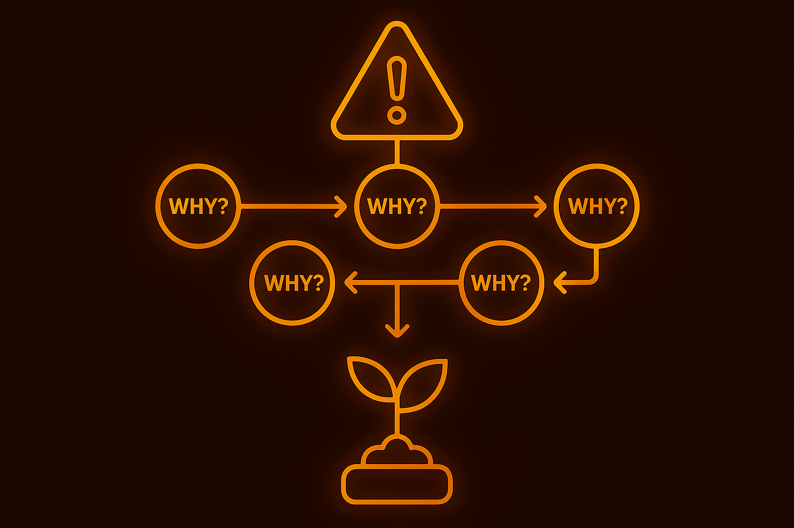

Why Kaizen & How It Works
The power of compounding: one grain doubled daily for 30 days becomes over a billion. Kaizen applies the same idea to work — small, daily improvements multiply.
- 1% better every day ≈ 37× in a year.
- Fast track an essential requirement of ISO9001.
- Log → Submit a Kaizen ticket (improvement) or a Celebration ticket (win).
- Approve → Managers review and approve; assignees receive tasks.
- Analyse → Optional ROI form quantifies time and money. For reactive items, run an AI-guided root-cause analysis.
- Implement → Track to completion; add impact notes and evidence.
- Report → Dashboard shows volume, ROI and trends; AI sends weekly and quarterly summaries.
Kaizen Tickets
Capture improvements in one list. Filterable, searchable and sortable — so work moves, not hides.
- Kaizen (Improvement): Proactive or Reactive; choose trigger (Internal / Audit / Customer).
- Fields: Title, Impact Type (Time, Cost, Quality, Risk), Completion Status, Impact Summary.
- Optional: ROI form & AI‑guided root cause.
Approvals & Ownership
Managers can approve, request changes, or schedule. Ownership and due‑dates keep momentum.
- One‑click approve/return with notes
- Assignee & watcher roles
- Audit trail of changes
ROI Evaluation & Calculation
Quantify impact with a guided form — time, costs, revenue and risk reduction — then roll it up by team and person.
- Time ROI: Time Saved × Frequency × People
- Financial ROI: Direct Cost Saved + Revenue Simulated + Avoided Cost
- Confidence level: Low / Medium / High

AI‑Guided Root‑Cause Analysis
For reactive items only. A guided dialogue helps teams determine the real root cause and consistent corrective actions.
- Bot‑led Q&A; structured steps
- Root cause + corrective & preventive actions
- Export to audits and reports
How to use: complete the root‑cause analysis with team.
KPI & Insight Dashboard
Track what matters — volume, speed, ROI and balance between proactive and reactive work.
- Kaizen volume by team/process
- Proactive : Reactive ratio
- Time to completion
- ROI by team and person
How to use: set quarterly targets and celebrate successes.
Reporting & Audits
Ready‑to‑send reports for leadership and audits.
- Pipeline improvement projects
- Impact breakdown by team/person
- Proactive vs Reactive trends
- Weekly Summaries: improvements made, leaderboard
- Quarterly Reports: top contributors, highest impact, trends
How to use: schedule monthly exports to leadership.